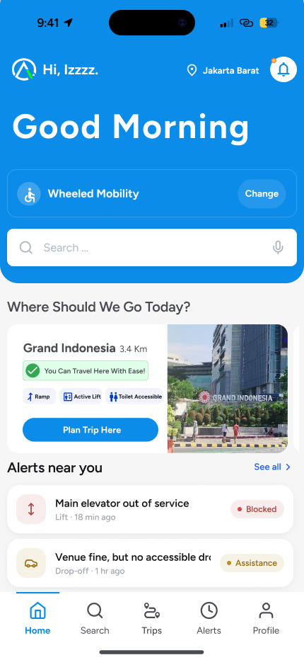
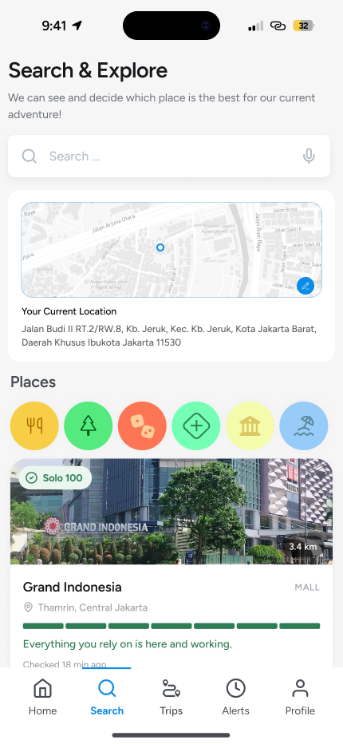
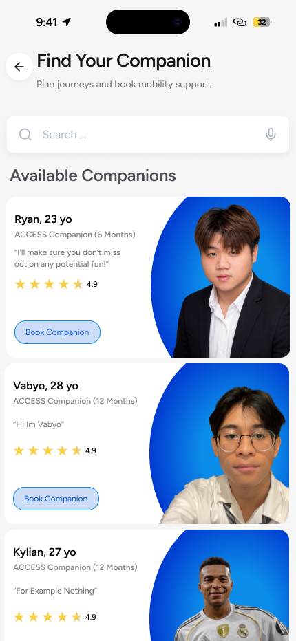
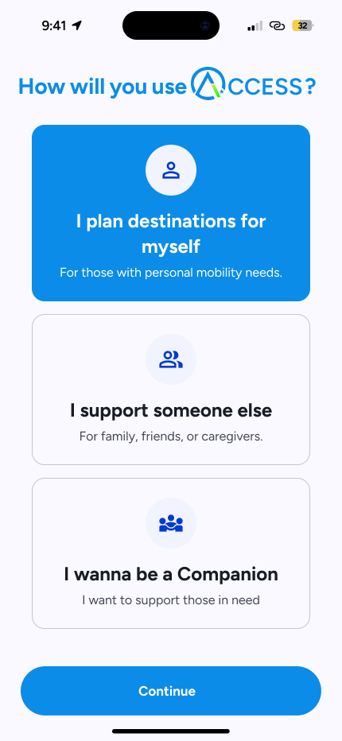
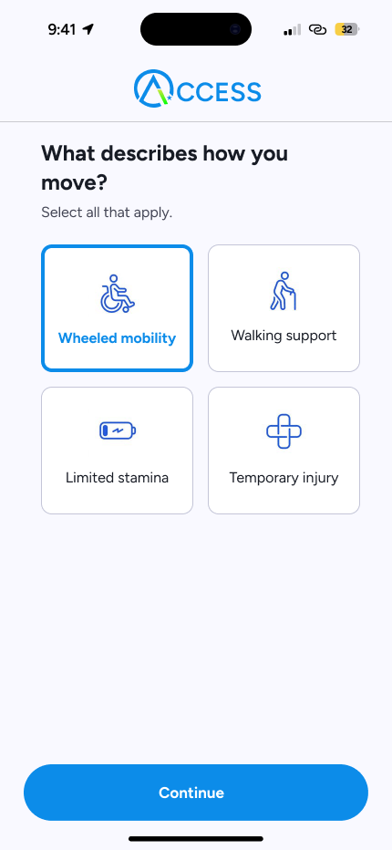
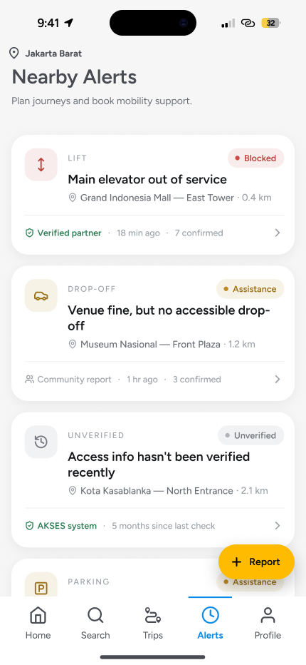
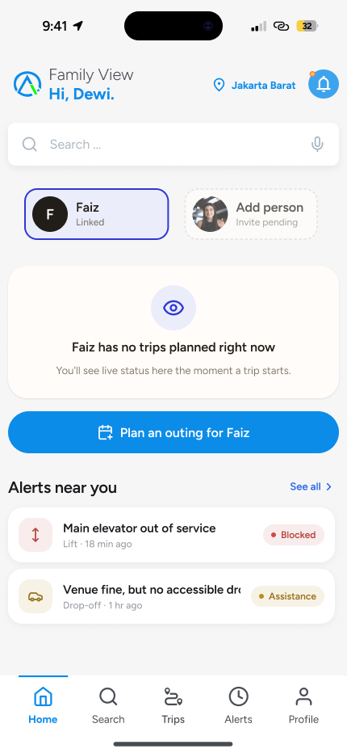
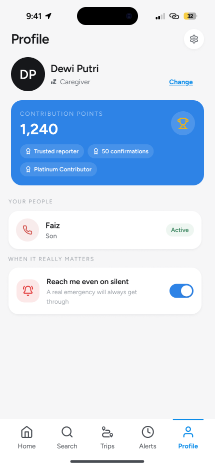
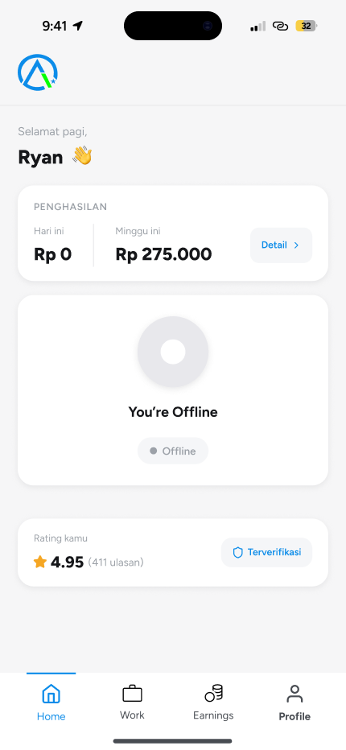

UI/UX / ACCESSIBLE JOURNEYS
ACCESS.
Plan the destination. Consider the support along the way.
An app prototype exploring how people with mobility challenges can find destination information, set personal preferences, and coordinate support for a journey.
- Project type
- UI/UX prototype
- Design tool
- Figma
- Gallery
- 9 selected screens
- Perspectives
- Individual, family, companion
PROJECT DIRECTION
Make support part
of the plan.
ACCESS brings destination discovery, mobility preferences, accessibility alerts, and companion discovery into one proposed experience. Family and caregiver views consider how someone else can help plan an outing and stay connected.
The screens below are original exports from the project's Figma design. Names, ratings, accessibility scores, prices, and availability are sample interface content within the prototype.
THE MAIN JOURNEY
Explore places and support.
Open any screen to see the full image.

Plan a visit
Bring mobility preferences, suggested destinations, and local updates into the starting view.

Find a destination
Explore places on a map and review the accessibility information proposed for each destination.

Look for a companion
Review proposed companion profiles when planning additional support for an outing.
Preferences and accessibility updatesRole selection, mobility needs, and nearby alerts · 3 screens

Choose a role
Start with the perspective that fits how someone will use ACCESS.

Set mobility needs
Select the mobility circumstances relevant to the journey.

Review nearby alerts
Check proposed facility updates and the status of community reports.
Family, caregiver, and companion viewsConnected people, support preferences, and companion activity · 3 screens

Plan with family
Review a linked person's trip area and start planning an outing together.

Manage support preferences
A caregiver profile brings connected people and notification preferences together.

See companion activity
The companion perspective includes availability, activity, and earnings summaries.
Continue exploring the original design file.
Open prototype in Figma